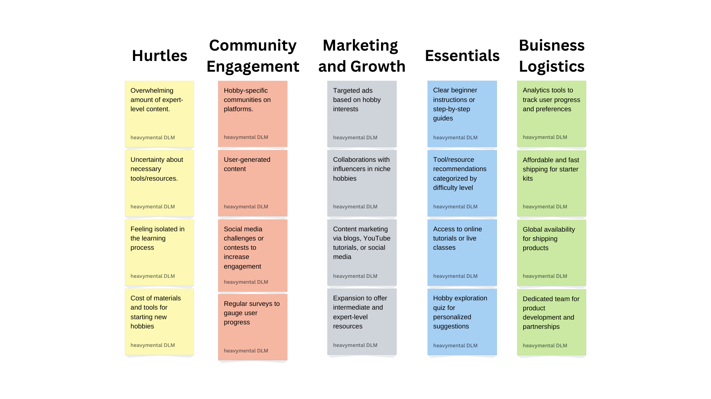
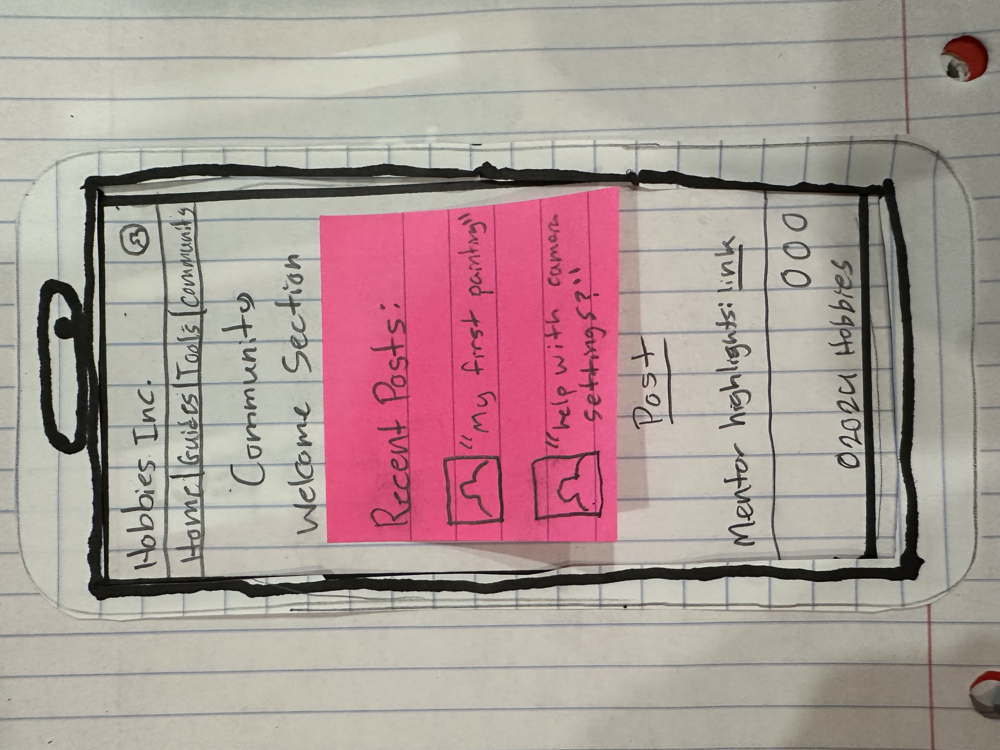

About Me
Skills
Highlighted Projects
Problem Statement

People often want to start a new hobby but don't know where to begin.
Affinity Diagram
This affinity diagram organizes the challenges beginners face when starting new hobbies, along with potential solutions and business strategies.
Affinity Diagram

The sketches illustrate various solutions for helping beginners start new hobbies. One features a supportive community workshop, where an instructor helps beginners with different activities in a welcoming space. Another depicts a clean, step-by-step digital guide, offering an easy and structured way to start a new hobby. Finally, the last image shows hobby tools neatly organized by difficulty level, with a person confidently browsing the beginner section. Together, these scenes highlight ways to reduce confusion and provide clear starting points for hobbyists.
Prototype
This prototype helps beginners start new hobbies with clear guides and essential tools. It features a Homepage with a call-to-action, a Step-by-Step Guide for each hobby, and a Tools & Materials page. The Community Page connects users for support and sharing progress. The design is simple and mobile-friendly, making it easy to use on any device.